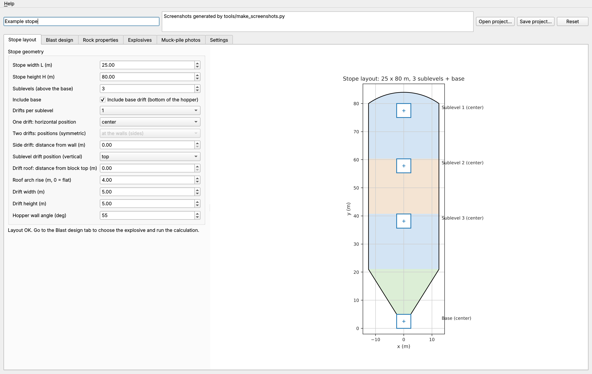
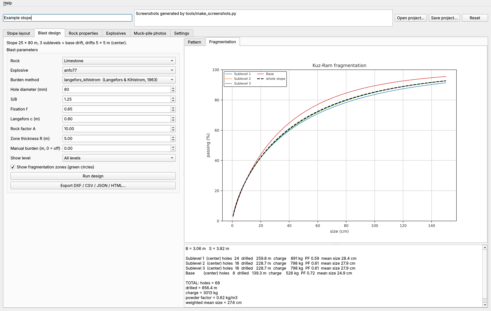
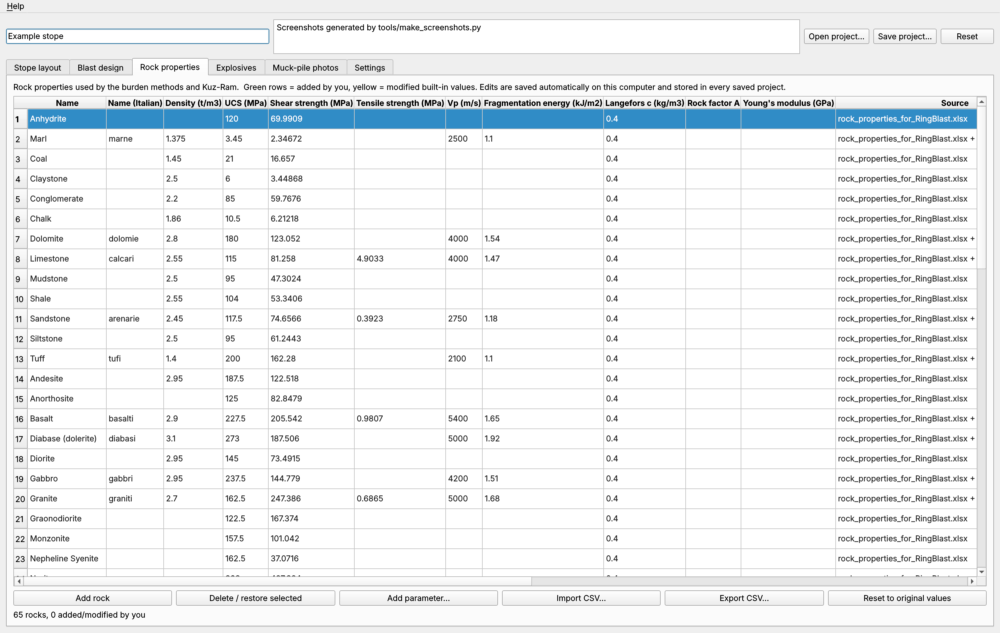
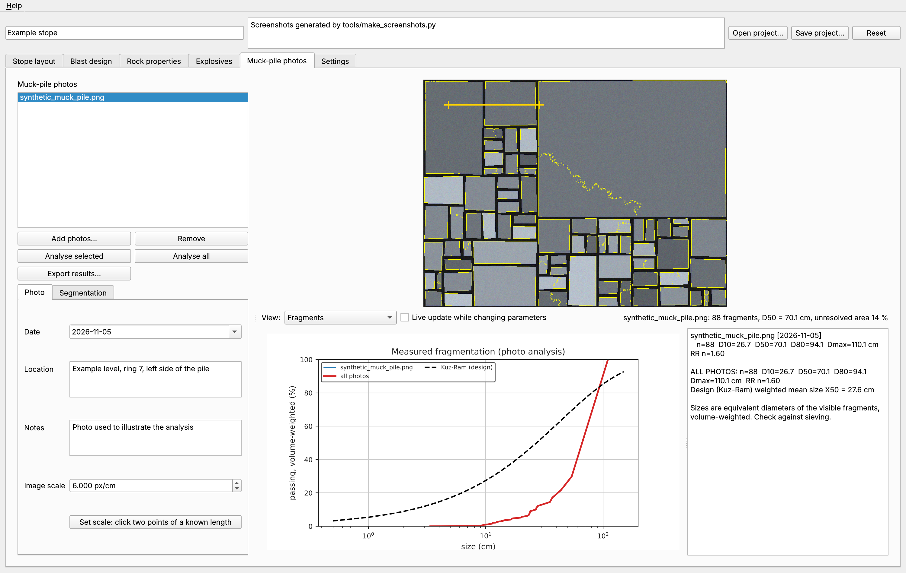
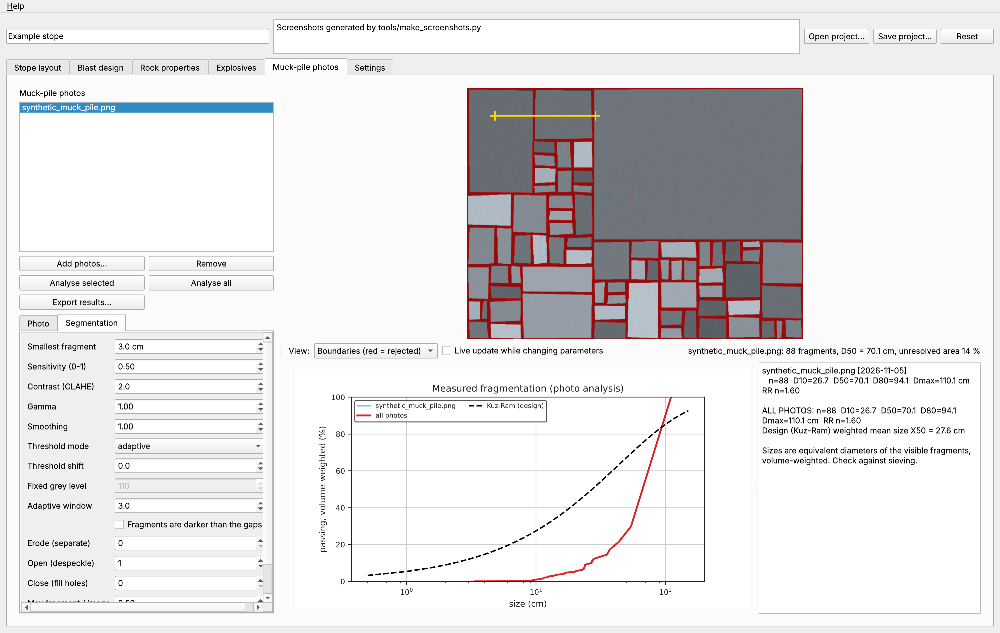

RingBlast designs ring (fan) blast patterns for sublevel stoping: for every drift level it builds the fan of holes, computes the charging, predicts the fragmentation with the Kuz-Ram model and lets you compare it with the size distribution measured on photographs of the muck pile.
Rest the mouse on any parameter or button to read what it does (this can be switched off in Settings). This manual is always available from Help → User manual (F1).

| Field | Meaning |
|---|---|
| Stope width L / height H | Size of the stope section (m). |
| Sublevels (above the base) | Number of sublevel drifts. Each one drills a rectangular block with its own ring. |
| Include base | Adds the base drift, at the bottom centre of the stope, which fires the trapezoidal block above the hopper. |
| Drifts per sublevel | 1 or 2. With 2, the sublevel has two drifts placed symmetrically about the axis of the stope; each drift fires one half of the block (the fans meet on the axis) and has its own ring, charging and results (Sublevel 1 left, Sublevel 1 right...). The base drift stays single, at the bottom centre. |
| Two drifts: positions | at the walls: each drift against its wall (or at the side-drift distance); centre of each half: each drift at a quarter of the width from the axis, i.e. in the middle of its half of the stope. The two drifts must fit side by side. |
| One drift: horizontal position | Centre, left or right. Side drifts are placed flush with the wall unless you enter a distance. |
| Two drifts: gap between the drifts | Option "set the gap between the drifts" of the two-drift positions: clear distance (m) between the two drift rectangles; the drifts are placed symmetrically about the centre line. The largest gap puts the drift axes on the walls. |
| Gap between sublevel blocks (vertical) | Clear vertical distance (m) between the charged block of one sublevel and the block below, so that the charges do not touch. The strip is not charged and is drawn grey; its volume stays in the stope and is shared between the adjacent blocks, so the total volume and the powder factor always refer to the whole stope. |
| Two drifts: gap between left and right block | Clear distance (m) between the left and the right block along the centre line; not charged, drawn grey. |
| Side drift: distance from wall | Gap between a side drift and the wall (m); 0 = flush with the wall. For two drifts at the walls the value can be negative: the drifts move towards the outside, down to minus half the drift width, where the drift axis lies on the wall of the stope. |
| Sublevel drift position (vertical) | top: the drift roof is at the top of its sublevel block (minus the distance below). center: the drift is centred in the sublevel. When the drift is below the top of the block, the fan also drills the rock above it. |
| Drift roof: distance from block top | Distance (m) between the top of the sublevel block and the drift roof; 0 = at the top. Used with position top; together with center it lets you place the drift at any height (any value up to the sublevel height minus the drift height). |
| Roof arch rise | 0 = flat roof (rectangle). A value > 0 makes the roof of the stope a circular arc: it is the distance between the top edge of the roof rectangle and the crown of the arc (maximum half the stope width, a semicircle). Only the top sublevel block is arched; its holes also cover the arch. |
| Drift width / height | Size of the drift section (m). |
| Hopper wall angle | Inclination of the sloping sides of the base trapezoid (degrees). |
The message under the form tells you if the geometry is not valid (for example a drift wider than the stope).

| Field | Meaning |
|---|---|
| Rock, Explosive | Taken from the two property tables (tabs 3 and 4); you can edit or extend them. |
| Burden method | Langefors-Kihlstrom, powder factor (Hustrulid), energy / new surface, Konya (1972, 1983), Ash, Andersen. A method that needs a rock or explosive property that is missing is reported, not guessed. |
| Hole diameter | mm. |
| S/B | Ratio of the spacing to the burden. The effective spacing of the ring is adjusted so that the toes close exactly on the corners. |
| Fixation f, Langefors c | Parameters of the Langefors-Kihlstrom formula. |
| Rock factor A | Kuz-Ram rock factor (about 8-12 for medium rock). |
| Zone thickness R | Thickness of the annular zones around the fan centre used to predict fragmentation by distance from the drift. |
| Manual burden | If larger than 0, overrides the method and uses this burden (m). |
| Show level | Plots all levels together or one level at a time (with two drifts, each drift is a level). |
| Booster (bottom charge) | Optional second explosive placed at the toe of every charged hole (default: none, a single explosive). Chosen from the Explosives table. In the pattern plot the booster is drawn thicker and in its own colour (blue by default, changeable in the Settings tab). |
| Booster length BCL (m) | Length of the booster at the toe of each hole; the rest of the charged length is the column charge (CCL). With a booster: the uniformity index uses the real BCL and CCL, n = (2.2 - 14 B/D) √((1+S/B)/2) (1 - W/B) (|BCL-CCL|/L + 0.1)0.1 L/H (Cunningham, 1983; L = BCL + CCL, H = hole length); the RWS in Kuznetsov's equation is the mean of booster and column RWS weighted on the length each occupies; the charge mass is the sum of the two masses. Without a booster BCL = CCL is assumed. For ring blasting W = 0 is sufficient (set drilling deviation to 0). |
| Logarithmic size axis | Ticked by default: the size axis of the fragmentation plot is logarithmic. Untick to return to a linear scale. The same option exists in the Muck-pile photos tab. It changes only the drawing, not the results. |
| Show fragmentation zones | Tick to draw the circles that bound the zones used for the fragmentation calculation; untick for a cleaner pattern. It changes only the drawing, not the results. |
Results. The Pattern tab shows the holes (stemming and charged part), the Fragmentation tab the Kuz-Ram curve of each level and of the whole stope. The text below lists, for each level, the holes, drilled and charged length, explosive mass, powder factor and mean size, and the totals. Holes shorter than 1 m are dropped; charging follows the rules: stemming 20 hole diameters, corner holes always fully charged, neighbouring holes thinned so that charges stay at least half a spacing apart.

The two tables are editable. Click a cell to change a value; Add rock / explosive adds a row, Add parameter... adds your own column, Import CSV... / Export CSV... exchange tables with other programs, Delete / restore selected removes a row you added or restores the original values of a built-in row, and Reset to original values brings back the shipped database.
verified marks the checked rows.
Open the Segmentation panel (left, below the photo list). Use the View menu below the image to see the stages: Original photo, Pre-processed (grey), Boundaries (red = pixels taken as gaps between fragments) and Fragments. Tick Live update to re-run the analysis automatically half a second after you stop changing a value.

| Symptom | What to try |
|---|---|
| Large blocks are cut into many pieces | Lower Sensitivity; raise Smoothing (rock texture is read as fractures); raise Threshold shift; use Close. |
| Touching blocks are merged into one | Raise Sensitivity; lower Threshold shift; use Erode (1-2). |
| Dark, flat photo or hazy air | Raise Contrast (CLAHE); adjust Gamma (<1 brightens shadows). |
| Strong shadows or uneven light | Keep Threshold mode = adaptive and enlarge Adaptive window. |
| Even light, clear dark gaps | Try otsu or fixed with a grey level read from the Pre-processed view. |
| Fragments darker than the gaps (wet rock on light fines) | Tick Fragments are darker than the gaps. |
| Tiny specks counted as fragments | Raise Smallest fragment or Open. |
| Sky, wall or ground counted as a fragment | Lower Max fragment / image; crop the photo before loading it. |
Reset segmentation restores the default values of the current photo; Copy to all photos applies the current settings to every photo (analyse again afterwards). Every photo keeps its own settings, and they are saved in the project together with the values used for the stored results; if you change a value after the analysis the summary tells you to analyse again.
Colours, background, fonts and sizes of every plot. Changes apply immediately and are remembered on this computer. Presets: Default, Dark, Publication. Reset to defaults restores the original style.
Help tooltips. Every parameter and button has a tooltip that explains it. When you know the program, untick Show help tooltips at the top of this tab to stop them appearing; the choice is remembered on this computer.
The bar at the top of the window holds the project name and notes and three buttons:
*.ringblast) containing the inputs, the rock and explosive rows used, the photo records with all their settings and measurements and the photos themselves. Copy that single file to another computer to continue the work there.
The file grows with the photos (a few MB each). If an original photo can no longer be found, the project is still saved and a warning names the missing file.project_images folder of the data folder (Appendix A). Projects saved with earlier versions (plain .json) still open.| File | Content |
|---|---|
*.dxf | Drawing for AutoCAD (stope, drifts, holes with charged and stemming parts, zones, labels, one layer each). |
*.holes.csv | Table of the holes: level, position, angle, length, charged length, toe coordinates. |
*.json | All inputs and results in machine-readable form. |
*.html | Printable report with the figures and tables. |
Files go to the folder you choose (default output of the work folder, see Appendix A). The same calculation is available from the command line: ringblast run case.json.
| Problem | Solution |
|---|---|
| The program does not start or a component is missing | Start it again from the shortcut with an internet connection: missing components are installed automatically. |
| A burden method says a property is missing | Fill the property (e.g. density, Vp, fragmentation energy) in the rock table, or choose another method. |
| "Set the image scale first" | Set the scale of that photo (section 5) before analysing. |
| No fragments, or very few, are found | Check the scale, lower Smallest fragment, look at the Boundaries view and adjust the threshold. |
| The Desktop icon looks old | Windows keeps an icon cache: delete the old shortcut and run Create Desktop Shortcut.bat again. |
Updates. Once a day, in the background, the program checks on GitHub whether a newer release exists and asks whether to download it (choices: Download, Remind me later, Skip this version). Help → Check for updates... does it at once; the automatic check can be switched off in the Settings tab. Nothing is installed automatically: the portable package for your system (zip on Windows, tar.gz on Linux and macOS) is downloaded and extracted in a new folder. On Windows and Linux copy the old RingBlast_data folder into the new one to keep your settings; on macOS nothing has to be copied (Appendix A).
See Help → About RingBlast for the version number and the reference text to cite. Report problems and suggestions to the authors at the address shown there, including the program information that the About window can copy.
Every release contains three portable packages that need no installation and no Python:
Windows RingBlast-portable-<version>-windows.zip (unzip, start RingBlast.exe; if SmartScreen warns, More info → Run anyway);
Linux ...-linux.tar.gz (tar xzf, then ./RingBlast/RingBlast; on Ubuntu/Debian sudo apt install libxcb-cursor0 libxkbcommon-x11-0 libegl1 if the program does not start; chmod +x if needed);
macOS ...-macos.tar.gz (Apple-chip Macs; move RingBlast.app to Applications; the app is not signed: the first time right-click → Open, or xattr -cr RingBlast.app).
Extract the Windows and Linux packages in a folder where you can write. From the Python sources: pip install -e ".[gui]" then ringblast-gui (Windows: RingBlast.bat).
RingBlast uses a data folder (own rocks and explosives, plot style, interface options, photos of opened projects; it survives updates) and a work folder (default projects and output offered by the file dialogs). Your projects (*.ringblast) are never inside the data folder.
| How the program is run | Data folder | Work folder |
|---|---|---|
Windows, portable RingBlast.exe | RingBlast_data next to the program | projects, output next to the program |
Linux, portable RingBlast | RingBlast_data next to the program | projects, output next to the program |
macOS, RingBlast.app | ~/Library/Application Support/RingBlast | ~/Documents/RingBlast/projects and .../output |
| Python sources (any system) | .ringblast in your home folder (C:\Users\name\.ringblast, ~/.ringblast) | projects, output in the project folder |
| Program folder read-only (Windows, Linux) | ~/.ringblast | ~/Documents/RingBlast |
portable.txt in the project folder enables it for the Python sources.~/Library).RINGBLAST_HOME (data folder) and RINGBLAST_WORK (work folder) override these rules.RingBlast_data (and projects, output if used) from the old folder to the new one. macOS: nothing to copy.